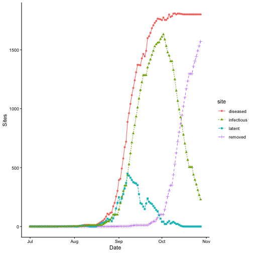
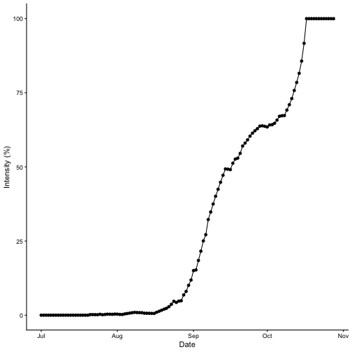
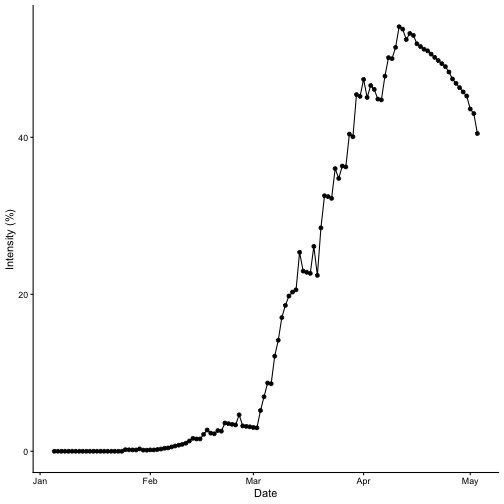

Introduction to {epicrop}
{epicrop} provides an R package of the ‘EPIRICE’ model as described
in (Savary et al. 2012), the modified
EPIRICE model as described in (Kim et al.
2015), the ‘EPIWHEAT’ model as described in (Savary et al. 2015) and a generic SEIR model
function, seir(), for modelling crop disease epidemics. The
model uses daily weather data to estimate disease intensity. A function,
get_wth(), is provided to simplify downloading weather data
via the {nasapower}
package (Sparks 2018) and predict disease
intensity of five rice diseases using a generic SEIR model (Zadoks 1971) function, seir().
For ‘EPIRICE’, default values derived from the literature suitable
for modelling unmanaged disease intensity of five rice diseases,
bacterial blight (bacterial_blight()); brown spot
(brown_spot()); leaf blast (leaf_blast());
sheath blight (sheath_blight()) and tungro
(tungro()) and two modified by Kim et al. (2015), (modified_kim_leaf_blast()
and helper_modified_kim_sheath_blight()), are provided. The
modified Kim versions provide leaf blast and sheath blight models that
include additional weather parameters and modified equations to better
reflect disease progress under certain environmental conditions on the
Korean Peninsula. The ‘EPIWHEAT’ model includes two wheat diseases, leaf
rust (leaf_rust()) and septoria tritici blotch
(s_tritici_blotch()), with default values derived from the
literature suitable for modelling unmanaged disease intensity of these
diseases.
Using the package functions is designed to be straightforward for
modelling rice disease risks, but flexible enough to accommodate other
pathosystems using the seir() function. If you are
interested in modelling other pathosystems, please refer to (2012) for the development of the parameters
that were used for the rice diseases as derived from the existing
literature and are implemented in the individual disease model
functions.
Get weather data
The most simple way to use the model is to download weather data from
NASA POWER using get_wth(), which provides the data in a
format suitable for use in the model and is freely available. See the
help file for naspower::get_power() for more details of
this functionality and details on the data (Sparks 2018).
# Fetch weather for year 2000 season at the IRRI Zeigler Experiment Station
wth <- get_wth(
lonlat = c(121.25562, 14.6774),
dates = c("2000-01-01", "2000-12-31")
)
wth## Key: <YYYYMMDD>
## YYYYMMDD DOY TEMP TMIN TMAX RHUM RAIN LAT LON
## <IDat> <int> <num> <num> <num> <num> <num> <num> <num>
## 1: 2000-01-01 1 24.38 22.85 27.46 91.25 14.93 14.6774 121.2556
## 2: 2000-01-02 2 24.28 22.68 27.42 90.88 6.96 14.6774 121.2556
## 3: 2000-01-03 3 23.82 22.17 26.96 88.36 2.28 14.6774 121.2556
## 4: 2000-01-04 4 23.68 21.90 27.14 88.00 0.87 14.6774 121.2556
## 5: 2000-01-05 5 24.11 21.54 28.18 88.12 0.43 14.6774 121.2556
## ---
## 362: 2000-12-27 362 24.46 22.90 26.28 92.49 21.15 14.6774 121.2556
## 363: 2000-12-28 363 24.64 23.32 27.28 91.92 6.01 14.6774 121.2556
## 364: 2000-12-29 364 24.58 22.51 27.90 90.79 5.49 14.6774 121.2556
## 365: 2000-12-30 365 25.31 22.84 28.84 86.25 2.07 14.6774 121.2556
## 366: 2000-12-31 366 24.47 21.63 28.63 87.83 3.45 14.6774 121.2556Predict bacterial blight
All of the helper family of functions work in exactly the same
manner. You provide them with weather data and an emergence date, that
falls within the weather data provided, and they will return a data
frame of disease intensity over the season and other values associated
with the model. See the help file for seir() for more on
the values returned.
# Predict bacterial blight intensity for the year 2000 wet season at IRRI
bb_wet <- bacterial_blight(wth, emergence = "2000-07-01")
summary(bb_wet)## simday dates sites latent infectious
## Min. : 1.00 Min. :2000-07-01 Min. : 0.0 Min. : 0.000 Min. : 0.000
## 1st Qu.: 30.75 1st Qu.:2000-07-30 1st Qu.: 305.0 1st Qu.: 0.000 1st Qu.: 1.624
## Median : 60.50 Median :2000-08-29 Median : 947.8 Median : 7.786 Median : 100.575
## Mean : 60.50 Mean :2000-08-29 Mean :1017.3 Mean : 75.026 Mean : 470.055
## 3rd Qu.: 90.25 3rd Qu.:2000-09-28 3rd Qu.:1628.8 3rd Qu.:106.708 3rd Qu.: 948.202
## Max. :120.00 Max. :2000-10-28 Max. :2332.8 Max. :449.126 Max. :1630.717
## removed senesced rateinf rlex rtransfer rremoved
## Min. : 0.00 Min. : 1.0 Min. : 0.00 Min. :0 Min. : 0.00 Min. : 0.000
## 1st Qu.: 0.00 1st Qu.: 122.6 1st Qu.: 0.00 1st Qu.:0 1st Qu.: 0.00 1st Qu.: 0.000
## Median : 1.00 Median : 655.9 Median : 0.00 Median :0 Median : 0.00 Median : 0.000
## Mean : 205.17 Mean : 845.9 Mean :15.01 Mean :0 Mean :15.01 Mean :13.092
## 3rd Qu.: 82.44 3rd Qu.:1214.3 3rd Qu.:19.94 3rd Qu.:0 3rd Qu.:19.94 3rd Qu.: 3.571
## Max. :1571.07 Max. :2824.4 Max. :96.26 Max. :0 Max. :96.26 Max. :96.260
## rgrowth rsenesced diseased intensity lat
## Min. : 0.00 Min. : 0.000 Min. : 0.000 Min. :0.000000 Min. :14.68
## 1st Qu.:14.62 1st Qu.: 7.736 1st Qu.: 2.669 1st Qu.:0.003155 1st Qu.:14.68
## Median :22.46 Median : 17.757 Median : 227.860 Median :0.090450 Median :14.68
## Mean :33.46 Mean : 23.536 Mean : 750.251 Mean :0.317216 Mean :14.68
## 3rd Qu.:56.48 3rd Qu.: 23.216 3rd Qu.:1752.431 3rd Qu.:0.635283 3rd Qu.:14.68
## Max. :79.30 Max. :101.491 Max. :1808.963 Max. :1.000000 Max. :14.68
## lon
## Min. :121.3
## 1st Qu.:121.3
## Median :121.3
## Mean :121.3
## 3rd Qu.:121.3
## Max. :121.3Plotting using {ggplot2}
The data are in a wide format by default and need to be converted to long format for use in {ggplot2} if you wish to plot more than one variable at a time.
## Need help getting started? Try the R Graphics Cookbook: https://r-graphics.orgWet season sites
The model records the number of sites for each bin daily; this can be graphed as follows.
dat <- pivot_longer(
bb_wet,
cols = c("diseased", "removed", "latent", "infectious"),
names_to = "site",
values_to = "value"
)
ggplot(data = dat,
aes(
x = dates,
y = value,
shape = site,
linetype = site
)) +
labs(y = "Sites",
x = "Date") +
geom_line(aes(group = site, colour = site)) +
geom_point(aes(colour = site)) +
theme_classic()
Wet season intensity
Plotting intensity over time does not require any data manipulation.
ggplot(data = bb_wet,
aes(x = dates,
y = intensity * 100)) +
labs(y = "Intensity (%)",
x = "Date") +
geom_line() +
geom_point() +
theme_classic()
Comparing epidemics
The most common way to compare disease epidemics in botanical
epidemiology is to use the area under the disease progress curve (AUDPC)
(Shaner and Finney 1977). The AUDPC value
for a given simulated season is returned as a part of the output from
any of the disease simulations offered in {epicrop}. You can find the
value in the AUDPC column. We can compare the dry season
with the wet season by looking at the AUDPC values for both seasons.
bb_dry <- bacterial_blight(wth = wth, emergence = "2000-01-05")
summary(bb_dry)## simday dates sites latent infectious
## Min. : 1.00 Min. :2000-01-05 Min. : 100.0 Min. : 0.000 Min. : 0.00
## 1st Qu.: 30.75 1st Qu.:2000-02-03 1st Qu.: 681.8 1st Qu.: 0.000 1st Qu.: 1.00
## Median : 60.50 Median :2000-03-04 Median :1244.4 Median : 4.716 Median : 73.54
## Mean : 60.50 Mean :2000-03-04 Mean :1252.4 Mean : 62.212 Mean : 377.60
## 3rd Qu.: 90.25 3rd Qu.:2000-04-03 3rd Qu.:1845.6 3rd Qu.:130.904 3rd Qu.: 835.86
## Max. :120.00 Max. :2000-05-03 Max. :2355.2 Max. :314.544 Max. :1201.11
## removed senesced rateinf rlex rtransfer
## Min. : 0.00 Min. : 1.0 Min. : 0.0000 Min. :0 Min. : 0.0000
## 1st Qu.: 0.00 1st Qu.: 122.7 1st Qu.: 0.0000 1st Qu.:0 1st Qu.: 0.0000
## Median : 1.00 Median : 652.6 Median : 0.0000 Median :0 Median : 0.0000
## Mean : 141.78 Mean : 835.0 Mean : 12.4423 Mean :0 Mean : 12.4423
## 3rd Qu.: 73.54 3rd Qu.:1292.1 3rd Qu.: 0.7989 3rd Qu.:0 3rd Qu.: 0.7989
## Max. :1134.29 Max. :2637.2 Max. :168.6255 Max. :0 Max. :168.6255
## rremoved rgrowth rsenesced diseased intensity
## Min. : 0.000 Min. : 9.688 Min. : 1.000 Min. : 0.000 Min. :0.00000
## 1st Qu.: 0.000 1st Qu.:21.322 1st Qu.: 6.895 1st Qu.: 2.537 1st Qu.:0.00303
## Median : 0.000 Median :28.421 Median : 14.780 Median : 196.999 Median :0.07774
## Mean : 9.452 Mean :38.099 Mean : 21.976 Mean : 581.583 Mean :0.19988
## 3rd Qu.: 0.000 3rd Qu.:57.194 3rd Qu.: 22.475 3rd Qu.:1333.224 3rd Qu.:0.44919
## Max. :168.626 Max. :78.713 Max. :177.715 Max. :1576.766 Max. :0.54088
## lat lon
## Min. :14.68 Min. :121.3
## 1st Qu.:14.68 1st Qu.:121.3
## Median :14.68 Median :121.3
## Mean :14.68 Mean :121.3
## 3rd Qu.:14.68 3rd Qu.:121.3
## Max. :14.68 Max. :121.3Dry season intensity
Check the disease progress curve for the dry season.
ggplot(data = bb_dry,
aes(x = dates,
y = intensity * 100)) +
labs(y = "Intensity (%)",
x = "Date") +
geom_line() +
geom_point() +
theme_classic()
The AUDPC values can be viewed directly from the attributes of the
data.table outputs above, but we can also create a small
helper function to extract them.
# Dry season
get_audpc(bb_dry)## [1] 23.78366
# Wet season
get_audpc(bb_wet)## [1] 37.56589The AUDPC of the wet season is greater than that of the dry season. Checking the data and referring to the curves, the wet season intensity reaches a peak value of 100% and the dry season tops out at 54%. So, this meets the expectations that the wet season AUDPC is higher than the dry season, which was predicted to have less disease intensity.